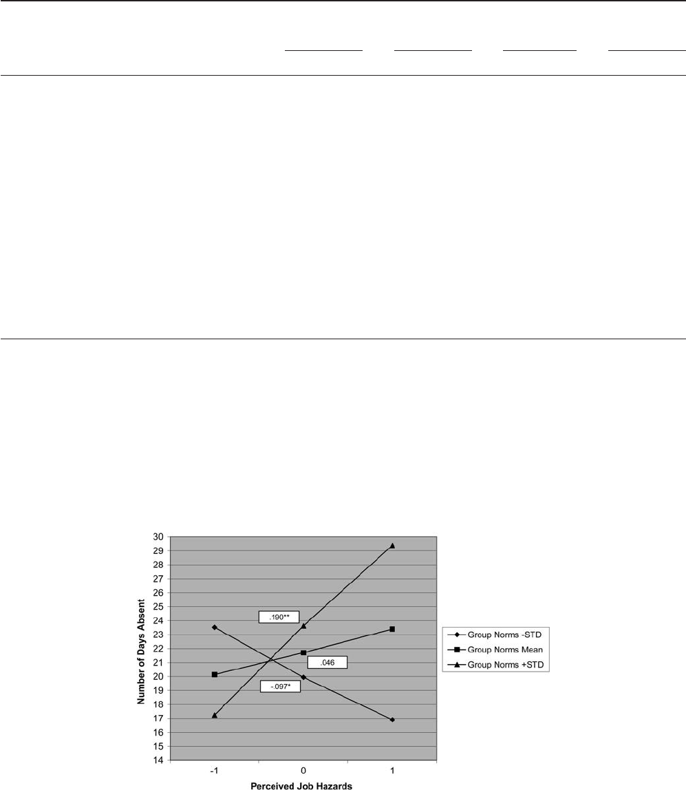
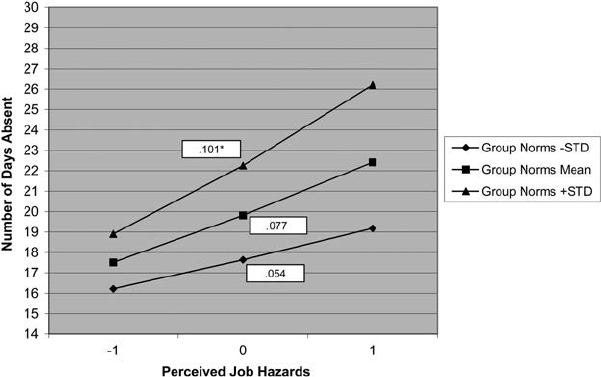

RESEARCH REPORT
Aversive Workplace Conditions and Absenteeism: Taking Referent Group
Norms and Supervisor Support Into Account
Michal Biron
University of Haifa and Tilburg University
Peter Bamberger
Tel Aviv University and Cornell University
Past research reveals inconsistent findings regarding the association between aversive workplace con-
ditions and absenteeism, suggesting that other, contextual factors may play a role in this association.
Extending contemporary models of absence, we draw from the social identity theory of attitude–behavior
relations to examine how peer absence-related norms and leader support combine to explain the effect of
aversive workplace conditions on absenteeism. Using a prospective design and a random sample of
transit workers, we obtained results indicating that perceived job hazards and exposure to critical
incidents are positively related to subsequent absenteeism, but only under conditions of more permissive
peer absence norms. Moreover, this positive impact of peer norms on absenteeism is amplified among
employees perceiving their supervisor to be less supportive and is attenuated to the point of nonsignifi-
cance among those viewing their supervisor as more supportive.
Keywords: absenteeism, critical incidents, job hazards, referent group norms, supervisor support
Employee absence takes a heavy toll on worker productivity. In
the United States, for example, absenteeism results in productivity
losses estimated at $225.8 billion per year (Stewart, Ricci, Chee,
Hahn, & Morganstein, 2003). Scholars have examined a wide
range of absence antecedents, paying particular attention to work-
related risk factors such as aversive workplace conditions, concep-
tualized as those work characteristics perceived by the employee
as noxious or threatening (Campion & Berger, 1990). Job hazards,
referring to potentially dangerous conditions that are perceived as
posing risk of injury (e.g., causing burns or bruises) to employees
(Holcom, Lehmen, & Simpson, 1993), serve as one of the most
potent forms of aversive work conditions (Frone, 1999). While
perhaps most widely associated with traditional manufacturing
settings, job hazards are also prevalent in service contexts, with
employees in health, transport, and retail, for example, subject to
hazards such as slippery floors, noise, electrocution, and toxic
agents (Hendricks & Layne, 1999).
Interestingly, however, while perceived aversive work condi-
tions such as job hazards are widely assumed to be positively
associated with employee absence (e.g., Harrison & Martocchio,
1998), scholars have suggested a number of reasons why the two
may be unrelated or even inversely related (Ose, 2005). Moreover,
empirical findings regarding the hazards–absence relationship are
inconsistent (Darr & Johns, 2008), and as noted by Aldana (2001),
the impact of such conditions on absenteeism remains unclear.
Accordingly, and consistent with a more context-based approach
to management theory (Bamberger, 2008; Johns, 2006), we sought
to better understand those work-based factors that might moderate
the hazards–absence relationship and thus explain these mixed
findings. Building upon Terry, Hogg, and White’s (2000) theory of
social identity and attitude–behavior relations, we posit that two
distinct factors—namely, co-worker absence norms and supportive
leader behavior—both independently and in combination, condi-
tion the impact of aversive work conditions such as job hazards on
employee absence. In what follows, we first review the nature of
the primary hazards–absence link. Then, after explicating how
each of these two contextual contingencies may independently
moderate the relationship between job hazards and absenteeism,
we theorize about their joint influence on the hazards–absence
relation.
The Hazards–Absence Relationship
As noted above, researchers generally assume a positive asso-
ciation between aversive workplace conditions and employee ab-
senteeism, with three primary mechanisms noted as potentially
driving this relationship. The first mechanism is grounded in the
notion that absence may minimize exposure to aversive work
conditions (e.g., Eriksen, Bruusgaard, & Knardahl, 2004). Accord-
ingly, employees perceiving their work conditions as physically
This article was published Online First March 5, 2012.
Michal Biron, Graduate School of Business, University of Haifa, Haifa,
Israel, and Department of Human Resource Studies, Tilburg University,
Tilburg, The Netherlands; Peter Bamberger, Recanati Graduate School of
Business Administration, Tel Aviv University, Ramat Aviv, Israel, and the
R. Brinkley Smithers Institute for Alcohol-Related Workplace Studies,
Cornell University.
We are grateful to Michael Frone for comments on earlier versions of
this manuscript and to Sam Bacharach, Etti Doveh, Claudia Preparata, and
Edward Watt for all of their assistance. We also thank The Smithers
Institute of Cornell University’s School of Industrial and Labor Relations
and The Henry Crown Institute for Business Studies of Tel Aviv University
for their financial support.
Correspondence concerning this article should be addressed to Michal
Biron, Graduate School of Business, University of Haifa, Mount Carmel,
Haifa, Israel 31905. E-mail: mbiron@univ.haifa.ac.il
Journal of Applied Psychology © 2012 American Psychological Association
2012, Vol. 97, No. 4, 901–912 0021-9010/12/$12.00 DOI: 10.1037/a0027437
901
uncomfortable or hazardous have greater incentives to miss work
as a means by which to reduce discomfort or exposure to risk
(Humphrey, Nahrgang, & Morgeson, 2007, p. 1337). The second
mechanism is grounded in occupational stress theory (Cooper &
Robertson, 1999). Employees may feel they need to miss work so
as to be able to more effectively attend to severe and/or chronic
psychosomatic health symptoms generated by job hazards (e.g.,
Hendrix & Spenser, 1989). Finally, just as employees may choose
to miss work in order to attend to strain-related health complaints,
they may also opt to do so in order to attend to acute or chronic
physical problems that they associate with the job (musculoskel-
etal disorders and the like; Breslin et al., 2007).
A number of studies provide empirical evidence in support of
such a positive association. For example, cross-organizational/
occupational studies have found absenteeism to be positively as-
sociated with objective indicators of danger on the job such as
number of workdays lost due to workplace accidents (Brown,
Fakhfakh, & Sessions, 1999), aversive temporal conditions such as
shift work (Drago & Wooden, 1992), disease exposure (Johansson
& Palme, 1996), and noise (Fried, Melamed, & Ben-David, 2002).
Meta-analytic results provide additional, albeit more indirect, sup-
port for a positive association between aversive conditions and
absence. For example, consistent with the earlier meta-analytic
findings of Fried and Ferris (1987), Humphrey et al. (2007) found
small to moderate effect sizes for the link between various job
characteristics and absence. Johns (2008, p. 163) noted that to the
extent that Humphrey et al.’s meta-analytic results indicated mod-
erate (Ϫ.23) to strong (.42) effects of aversive work conditions on
job satisfaction and stress (respectively)—two employee attitudes
consistently predictive of absenteeism—their findings suggest that
the effects of aversive conditions on absenteeism, while operating
through such intermediary variables, are likely to be positive and
robust. Accordingly, we posit
Hypothesis 1: There is a positive association between per-
ceived workplace hazards and employee absenteeism.
However, as suggested above, a number of studies have also
found null (e.g., Rix, 1987; Roelen, van der Pol, Koopmans, &
Groothoff, 2006) and even inverse (e.g., Allen, 1981; Viscusi &
Moore, 1991) relations between aversive work conditions and
absenteeism. Scholars have proposed a number of mechanisms that
may, by countervailing or even reversing the positive effects noted
above, result in such outcomes. For example, Viscusi and Moore
(1991) suggested that objectively hazardous conditions may, be-
cause of attraction-selection-attrition processes (Schneider, 1987),
not always be viewed by workers as sufficiently hazardous to
justify absence. Their findings (based on National Institute for
Occupational Safety and Health data) suggest that jobs character-
ized by such conditions may attract and retain employees who,
being more suited to such conditions, fail to view them as so
demanding or draining as to justify absence. Alternatively, accord-
ing to the Shapiro–Stigliz model, workers in high-risk contexts are
likely to receive some compensating differential (e.g., higher wag-
es; more safety-conscious and/or supportive management), with
this differential serving as a disincentive to shirking (Meyer,
Viscusi, & Durbin, 1995; Smith, 1979). Consistent with such a
notion, Ose’s (2005) findings suggest that jobs posing more of an
objective physical risk to employees’ well-being may also be
precisely those characterized by higher pay as well as better safety
standards and procedures and/or more safety-conscious and sup-
portive leaders, such that employees may not perceive conditions
as sufficiently hazardous to economically justify absence as a
means by which to reduce vulnerability or seek relief. Similarly,
Va¨a¨na¨nen et al. (2003, p. 820), studying several thousand employ-
ees of a large, multinational forestry products firm, found that a
positive relation between aversive job characteristics and absence
was contingent on relatively lower levels of supportive supervi-
sion.
Given Johns’s (2008, p. 163) comment that “moderators may
limit the observed bivariate connection between job characteristics
and attendance and even reverse the typical sign,” these findings
are less than surprising. Rather, they point to the need to pay
greater attention to the role that normative and supervisory factors
may play in affecting the nature of the relationship between
aversive workplace conditions and employee absenteeism.
Norms as a Moderator: The Role of Peer
Absence Norms
As noted by van Knippenberg, van Knippenberg, and Giessner
(2007), employees often have little choice but to “rely on others to
make sense of issues for which no ‘objective’ reference point
exists” (p. 55). With inconsistent signals from organizational lead-
ers and interests often generating uncertainty among employees as
to when attendance is required and when absence is considered
legitimate, such peer-based sense-making processes have been
demonstrated to play a key role in explaining employee absentee-
ism (Bamberger & Biron, 2007). In this context, group absence
norms, defined as a set of shared beliefs and perceptions regarding
what is an acceptable rate of, or justification for, employee ab-
sences in a given work unit (Chadwick-Jones, Nicholson, &
Brown 1982; Johns & Nicholson, 1982), have been found to be
associated with attendance behavior (e.g., Harrison, 1995; Rentsch
& Steel, 2003).
While many studies focused on the norms of those in an indi-
vidual’s formal work unit (department, plant; e.g., Harrison, 1995),
in the current study we focus on the potential impact of normative
influences associated with those who may be most instrumental in
shaping an individual employee’s attitudes and behaviors, namely,
those employees comprising the individual’s informal peer refer-
ence group, typically consisting of those individuals in whom the
employee places the greatest trust, with whom the employee has
the closest work-based ties, and to whom the employee turns for
advice and support (Hackman, 1992). Recently, Bamberger and
Biron (2007) demonstrated how, over and above the effect of
formal group norms, referent group absence norms affect absence
behavior.
However, group norms may also have an indirect effect on
absenteeism. Specifically, consistent with social information pro-
cessing theory (Salancik & Pfeffer, 1978), the absence norms of
referent others provide valuable information for making sense of
reality. Inferences drawn from the absence norms of reference
others may directly influence absence-related decisions (e.g.,
whether a particular situation warrants absence) and thus the
individual’s own attendance-related behavior (Bamberger & Bi-
ron, 2007; Harrison & Martocchio, 1998). Applied to the case of
job hazards and absenteeism, this perspective suggests that de-
902
BIRON AND BAMBERGER
pending on the absence-related norms attributed to their referent
others, individuals might respond to job hazards differentially.
Under conditions of permissive referent group absence norms, job
hazards may be framed as problematic work situations that legit-
imize or even necessitate an absence response (e.g., time off
needed in order to recover). However, under conditions of stricter
absence norms, absence may be framed as a less legitimate or more
problematic response to these same hazards. Accordingly we pro-
pose
Hypothesis 2: There will be an interaction between perceived
job hazards and subjective referent group absence norms.
Specifically, the relationship between perceived job hazards
and absenteeism will be stronger as a function of more
permissive subjective referent group absence norms.
Leadership as a Moderator: The Role of
Supervisor Support
Perceived supervisory support reflects the degree to which one’s
supervisor is viewed as both caring and able to provide emotional
and instrumental assistance in times of need (Bacharach & Bam-
berger, 2007). This variable was found to be positively associated
with subordinates’ motivation, commitment (e.g., Mayfield, May-
field, & Kopf, 1998), and performance (e.g., Cropanzano, Rupp, &
Byrne, 2003) and inversely associated with stress, work-related
health problems (e.g., Stephens & Long, 2000), and absenteeism
(e.g., Cropanzano et al., 2003).
For two main reasons, supervisor support may also have an
indirect, moderating effect on absenteeism. First, by its very na-
ture, supervisory support may serve as a buffering mechanism,
alleviating the strain and other negative outcomes associated with
aversive work environments that could underlie absence behavior
(Cohen & Willis, 1985; Va¨a¨na¨nen et al., 2003). For example, to the
extent that supervisor support manifests itself in the form of
recommendations as to how to avoid or minimize exposure to
workplace hazards or actual assistance in doing so (e.g., providing
training in safety issues, assignment to other, more safe, positions;
Ganster, Fusilier, & Mayes, 1986), employees may feel less need
to use absence to reduce the risk that they suspect workplace
hazards pose to them. Second, the reciprocity norms underlying
social exchange (Blau, 1964; Settoon, Bennett, & Liden, 1996)
may make employees feel uncomfortable using absence as a means
to cope with perceived job hazards when working with a support-
ive supervisor. Recognizing the potential adverse effects of absen-
teeism on their supervisor (e.g., the need to handle unpredictable
work rearrangements, compensate overtime, etc.) and the organi-
zation she or he represents (e.g., lost productivity, replacement
costs), individuals perceiving their supervisor as being more sup-
portive are likely to be less willing to impose these costs on their
supervisor and more willing to attend work even in the face of
aversive conditions (Bacharach, Bamberger, & Biron, 2010; van
Knippenberg, van Knippenberg, de Cremer, & Hogg, 2004). As
noted by Wang and Walumbwa (2007, p. 403), the more employ-
ees feel that their supervisor and the organization she or he
personifies are treating them well, the more they “will feel obli-
gated to ‘pay back’ or reciprocate by becoming more committed to
the organization.” Accordingly, we posit
Hypothesis 3: There will be an interaction between perceived
job hazards and supervisor support. Specifically, the relation-
ship between perceived job hazards and absenteeism will be
weaker as a function of more supportive supervision.
The Joint Effect of Normative and Leadership
Influences: A Three-Way Interaction
Although the arguments presented above suggest that permis-
sive referent group absence norms and supportive supervision have
independent and opposing moderating effects on the relationship
between job hazards and employee absence, the theory of social
identity and attitude–behavior relations (Tajfel & Turner, 1986;
Terry et al., 2000) suggests that normative and leadership influ-
ences may in fact interact with each other in conditioning the
hazards–absence relationship. Specifically, to the degree that the
leadership context may affect the saliency of the individual’s
identification with his or her referent peers, the impact that peer
absence norms may have on the hazards–absence relationship may
be amplified or attenuated.
Underlying this three-way interaction is the impact that more
supportive supervision can have on the degree to which subordi-
nates identify with peer referent groups maintaining norms incon-
sistent with those of organizational leaders and hence on the
salience of such norms when it comes to the framing of aversive
work conditions and the “acceptable” or “legitimate” response to
them. With supervisors viewed as being at the nexus of
organization–employee relations (Aselage & Eisenberger, 2003),
supervisors perceived as more supportive may strengthen employ-
ees’ sense of identity with the broader organizational mission.
Such leaders may do so by developing in employees a sense of
pride in contributing to a higher, collective cause (van Knippen-
berg et al., 2004; Kirkman, Chen, Farh, Chen, & Lowe, 2009) and
by instilling a sense of belonging to some larger mission or
enterprise (Shamir, Zakay, Breinin, & Popper, 1998). Indeed,
research has shown that supervisors may play a highly salient role
in shaping not only individuals’ sense of attachment to and iden-
tification with the organization (Shamir et al., 1998; van Knippen-
berg et al., 2004) but also their willingness to internalize its values
(Hoffman, Bynum, Piccolo, & Sutton, 2011; Stinglhamber &
Vandenberghe, 2003). And to the extent that such supervisors offer
an alternative basis of identity to that of the reference group,
referent peers and the norms that they maintain may be less salient
to the individual (Pratt, 2003) and consequently have a less robust
effect on the way the individual responds to perceived aversive
work conditions.
Recent research in social psychology provides a basis for pos-
iting a three-way interaction among cognition, referent norms, and
the presence of some competing category implicitly affecting the
salience to the individual of the referent group or its members’
norms (Abrams & Hogg, 2001). Specifically, Terry et al. (2000)
described several experiments in which the moderating effect of
referent group norms on attitude–behavior relations was itself
contingent on the degree to which the referent group was a salient
basis for self-conception. When the reference group was chal-
lenged as the basis for self-identity by some competing social
category, its members’ norms had a diminished effect on attitude–
behavior relations. Although the salience of the group to the
individual has been identified as the factor most directly moder-
903
AVERSIVE WORKPLACE CONDITIONS AND ABSENTEEISM
ating the impact of the norms on attitude–behavior relations
(Hogg, Martin, & Weeden, 2004), several studies have demon-
strated that the strength of a competing category for self-
identification, by implicitly influencing the salience to the individ-
ual of the group and its members’ norms, has a similar effect
(Abrams & Hogg, 2001).
Such findings are consistent with Terry et al.’s (2000, p. 90)
conclusion that “the moderating effect of group norms on attitude–
behavior consistency should be evident only if the norms emanate
from a self-inclusive membership group.” In other words, if the
group membership is not a basis for self-conception, or if its
hegemony for self-conception is challenged by some competing
category, then the group norms should have a diminished (or no)
impact on behavioral outcomes. A similar observation was offered
by Ehrhart and Naumann (2004). Their conceptual model suggests
that when employees have multiple sources of identification (e.g.,
divergent role models), the probability that their behavior will be
consistent with group norms declines. Accordingly we propose
Hypothesis 4: There will be a three-way interaction among
perceived job hazards, subjective referent group absence
norms, and supervisor support. Specifically, the amplifying
effect of permissive subjective referent group absence norms
on the perceived job hazards–absence association will be
stronger when supervisor support is low and will be attenu-
ated when supervisor support is high.
Method
Sample and Procedure
Participants were identified through the membership files of a
local union representing all nonexempt workers employed by the
transportation authority of a large municipality in the United
States. This transportation authority closely monitors employee
attendance and enforces a strict absence policy requiring employ-
ees to submit medical certification for any absence other than an
approved vacation or personal day and, in many cases, to submit to
an employer-sponsored medical examination for an absence spell
longer than two days.
A random sample of 1,093 workers, stratified by operating
division, was drawn from among the workers employed by the
authority for at least 12 months. All were employed in one of the
authority’s three main operating divisions, namely, buses (e.g., bus
drivers, mechanics), stations (e.g., station agents, cleaners), and
underground/subway operations (e.g., conductors, train operators).
While many of those in particular occupations work rather inde-
pendently (e.g., bus drivers), even these individuals have extensive
break time (at least 1 hr per day), which is typically spent with
their co-workers at the depot, terminal, or shop. The size of each
division-specific target sample was determined on the basis of the
proportionate size of each division. Sampled members were re-
quested to complete an 18-page questionnaire, with confidentiality
guaranteed by the union. Approximately 2 years later, absence data
for the 24-month period beginning with the survey administration
were drawn from the authority’s personnel archives.
Working with the union, we collected survey data from 626
transit workers using a coding mechanism designed to ensure that
no party would be able to physically link a name to a question-
naire. We excluded 37 observations from our analyses because of
excessive missing data, and 81 participants were excluded because
they either retired or went on disability within the 2 years follow-
ing the survey. Of the remaining 508 participants, 69% were
males, and the mean age was 46 years (SD ϭ 8). Forty-three
percent were employed in the authority’s bus division, 48% in the
station division, and 9% in the subway division. Given the size of
the overall target sample (1,093), the effective response rate was
46.5%. The results of t-test analyses comparing mean scores along
all study variables indicated no significant differences between
those dropped from the analyses and those remaining. Table 1
presents means and standard deviations for the study variables
(N ϭ 492, due to a list-wise deletion of observations).
Measures
Absenteeism. Absence was operationalized in terms of the
number of workdays recorded by the transit authority in the
employee’s personnel record as having been lost for any reason
other than an approved vacation or personal day in the 24-month
period following the administration of the survey. The mean num-
Table 1
Means, Standard Deviations, and Intercorrelations (Pearson) of the Measured Variables (N ϭ 492)
Variable MSD 1 2 3 4 5 6 7 8 9 10 11 12
1. Gender (0 ϭ male; 1 ϭ female) 0.31 0.46 —
2. Age (years) 46.05 8.05 .02 —
3. Tenure 11.42 6.23 .07 .46
ءء
—
4. Ethnicity (0 ϭ Caucasian; 1 ϭ minority) 0.91 0.29 .12
ءء
Ϫ.17
ءء
Ϫ.23
ءء
—
5. Average work hours per week 45.46 9.59 Ϫ.13
ءء
Ϫ.04 Ϫ.04 Ϫ.06 —
6. Division (buses) .43 .49 Ϫ.32
ءء
Ϫ.18
ءء
Ϫ.32
ءء
Ϫ.03 .29
ءء
—
7. Division (underground/subway operations) .09 .28 Ϫ.06 .05 .24
ءء
Ϫ.05 Ϫ.07 Ϫ.25
ءء
—
8. Negative affectivity 1.87 0.88 Ϫ.05 .01 Ϫ.10
ء
Ϫ.02 Ϫ.06 Ϫ.01 Ϫ.05 —
9. Perceived job hazards 2.68 1.57 .17
ءء
Ϫ.06 .06 .01 .03 Ϫ.02 .09
#
Ϫ.02 —
10. Exposure to critical aversive incidents 1.88 2.73 .05 Ϫ.08
#
Ϫ.04 .02 .02 .05 Ϫ.09
ء
Ϫ.03 .29
ءء
—
11. Referent group absence norms 4.87 2.18 .01 .02 .12
ءء
Ϫ.03 Ϫ.08
#
Ϫ.07 Ϫ.03 Ϫ.03 .20
ءء
.14
ءء
—
12. Supervisor support 0.93 0.66 .04 Ϫ.05 .10
ء
Ϫ.03 Ϫ.05 Ϫ.02 Ϫ.03 Ϫ.04 .25
ءء
.16
ءء
.31
ءء
—
13. Absenteeism 19.34 12.95 .08
#
Ϫ.04 .05 .01 .05 .06 Ϫ.06 .05 .03 .02 .11
ء
Ϫ.02
#
p Ͻ .1.
ء
p Ͻ .05.
ءء
p Ͻ .01.
904
BIRON AND BAMBERGER
ber of days absent for those in the sample over the 24-month study
period was 19.3 (SD ϭ 12.5), or approximately 10 days per year.
The reliability of this measure was estimated based on Hackett and
Guion (1985, pp. 343–344). The between-year correlation of mean
monthly absence rates (0.61) was used as an indicator of the
consistency of measurement across relatively equivalent time pe-
riods (i.e., test–retest stability of mean monthly rates for Year 1
compared with Year 2). This coefficient is toward the high end of
the estimate reported by Hackett and Guion (1985).
Absence data were highly skewed to the right (skewness ϭ 1.47
[SE ϭ .110]; kurtosis ϭ 4.03 [SEϭ .219]) and not normally
distributed (Kolmogorov–Smirnov statistic ϭ .126, p Ͻ .01). Such
data require a nonlinear modeling strategy (e.g., Bamberger &
Biron, 2007). Accordingly, we applied the SAS/ETS Countreg
Procedure and PROBCOUNTS macro to produce the average
predicted count probability from Poisson, negative binomial, and
overdispersed Poisson regressions. We then compared these aver-
age predicted count probabilities with the observed probability
values. The probability based on a negative binomial model best fit
the observed probabilities. Accordingly, we tested our hypotheses
on the basis of a negative binomial model.
Perceived job hazards. Thirty-four members, randomly se-
lected from the same union, were asked to identify relevant haz-
ards from among those included on the instruments developed by
Frone (1998) and Holcom et al. (1993) as well as to identify any
additional hazards that they periodically faced on the job. They
were asked to comment on the stability of these hazards over time.
Although several of the identified hazards were job-specific (e.g.,
electrocution) or somewhat seasonal (e.g., extreme temperatures),
most were common across jobs and characterized as consistent
concerns over time. Union accident reports also indicated that the
frequency and nature of employee work-related injuries were re-
markably stable over the 24-month study period. The measure used
here includes the 13 hazards identified as most relevant to their
jobs by these informants. Using a response format ranging from 0
(never)to6(daily), we asked employees to indicate the frequency
with which they felt they had been exposed to different workplace
hazards during the past 12 months. Sample items included contin-
uous loud noise, dangerous chemicals/contaminants, and extreme
temperature or humidity (␣ϭ.87).
For purposes of study replication, we assessed perceived job
hazards in terms of an additional variable, namely, exposure to
work-based critical incidents. This variable describes distinct
events in which employees are victims of serious injury, witness
others suffer serious injuries, or feel that their lives are in danger
(e.g., verbal and physical assaults by customers or co-workers;
Monnier, Cameron, Hobfoll, & Gribble, 2002; van der Velden et
al., 2006). Using Monnier et al.’s (2002) 10-item scale, we asked
employees to indicate how many times in the past 12 months they
were involved in such incidents as “Injury to yourself severe
enough to require medical treatment” and “Verbal or physical
threat by a customer/civilian to yourself while on duty.” The
response scale ranged from 0 to “7 or more” (␣ϭ.70).
Subjective referent group absence norms. Participants
were asked to think about two co-workers with whom they felt
“most strongly connected,” whose opinions they “most closely
valued,” that is, people they could “really talk to and rely upon.”
This wording is nearly identical to that used in previous network
studies (e.g., Burt, 1984). For each of these co-workers, partici-
pants were asked to indicate the degree to which they viewed 20
possible reasons for absence as “justifiable.” Responses were
given on a five-point scale ranging from 1 ϭ very illegitimate to
5 ϭ very legitimate, with higher scores being indicative of more
permissive absence norms. This operationalization of peer norms
has been employed by others (e.g., Geurts, Schaufeli, & Buunk,
1993). Although the original instrument, developed by Harvey and
Nicholson (1999), included 18 items focusing on the individual’s
own illness symptoms (e.g., headache, sore throat), based on the
six illness clusters identified by these researchers, we combined a
number of related symptom items in order to reduce the list of
own-illness items to 13. These items were also the most prevalent
among the physician-prepared medical excuses that absent em-
ployees were required to submit upon their return to work. Seven
additional items relating to personal situations potentially requir-
ing absence from work (e.g., parental illness; important event at
child’s school; household chore) were added to these 13 illness
items on the basis of the scale developed by Bamberger and Biron
(2007). The mean alpha for this 20-item measure across the two
co-workers was .82.
Intermember, or within group (WG), agreement (r
WG
) was
calculated for each referent dyad on the absence norms variable,
denoting the degree to which the subjective ratings of referents of
each individual were interchangeable (Bliese, 2000). Across the
492 referents’ dyads, the mean r
WG
was .77 (minimal r
WG
value
was .69), which is high enough to justify aggregation. Accord-
ingly, we calculated the mean absence norms score for each
referent other and then took the average of these two means as our
indicator of perceived referent group norms.
Supervisor support was measured on the basis of an 8-item
index adopted from Anderson and Williams (1996). Participants
were asked to indicate how often during the past month their
immediate (i.e., direct) supervisor provided them with such sup-
port as “Talked you through work-related problems, helping you
come up with solutions” and “Provided you with encouragement
(positive feedback) about your work.” Participants responded us-
ing a 5-point scale ranging from never (0) to several times a day
(4) (␣ϭ.93).
Control variables. Previous research suggests that a vari-
ety of demographic and individual difference variables such as
gender, age, tenure, ethnicity, and average hours worked per
week, as well as negative affectivity, may be related to percep-
tions of aversive work conditions (e.g., Clarke & Cooper,
2004), sickness absence (e.g., Harrison & Martocchio, 1998), or
both. Accordingly, in order to take into account any spurious
effects and ensure that we were capturing the effects of aversive
conditions above and beyond these factors, we controlled for
each of these variables (with negative affectivity assessed on
the basis of the Negative Affect Scale; Watson, Clark, &
Tellegen, 1988; ␣ϭ.81). In addition, we controlled for the
possibility that the values for both the independent and depen-
dent variables differed systematically between the three divi-
sions by creating two dummy variables to represent the three
divisions (stations served as the reference group). Finally, in
order to link survey data with objective absentee data, we had
to use nonanonymous data collection. To account for potential
social desirability bias, we included in all analyses a measure
for self-enhancement (namely, Paulhus’s [1991] Balanced In-
ventory of Desirable Responding). The inclusion of this vari-
905
AVERSIVE WORKPLACE CONDITIONS AND ABSENTEEISM
able had no meaningful effect on the observed relationships,
and it was eventually dropped from the models.
Results
Means, standard deviations, and correlations are displayed in
Table 1. The bivariate results indicate that neither job hazards nor
critical incidents were associated with absence (r ϭ .03 and r ϭ
.02, respectively, both at p Ͼ .05). In addition, both aversive
conditions were associated with referent group absence norms (r ϭ
.20 and r ϭ .14, respectively, both at p Ͻ .01) and supervisor
support (r ϭ .25 and r ϭ .16, respectively, both at p Ͻ .01).
Finally, group norms, but not supervisor support, were associated
with absenteeism (r ϭ .11, p Ͻ .05, and r ϭϪ.02, p Ͼ .05,
respectively).
As can be seen in Model 2 of Tables 2 and 3, respectively, the
multivariate results indicate no direct effect for job hazards, or for
critical incidents, on absenteeism (B ϭ .02 and B ϭ .00, both at
p Ͼ .05). Accordingly, Hypothesis 1 is not supported by the data.
To test Hypotheses 2 and 3 (suggesting moderating effects for
subjective referent group absence norms [Hypothesis 2] and su-
pervisor support [Hypothesis 3] in the aversive conditions–absence
association), we incorporated the centered interaction terms (Aiken
& West, 1991) into the model. As shown in Model 3 of Tables 2
and 3, and consistent with our prediction, the association between
aversive work conditions and the number of days absent was more
positive under conditions of more permissive subjective referent
group norms (B ϭ.03 and .01, respectively, for job hazards and
critical incidents, both at p Ͻ .05; slopes significantly differ from
one another: ⌬ϭ.117, Wald
2
ϭ 4.84, and ⌬ϭ.104, Wald
2
ϭ
4.91, both at p Ͻ .05). In addition, the hazards–absence and the
critical incidents–absence relationships were, as hypothesized,
more negative under conditions of greater supervisor support (B ϭ
Ϫ.02 and Ϫ.00, respectively, both at p Ͻ .05; slopes significantly
differ from one another: ⌬ϭ.023, Wald
2
ϭ 10.04, and ⌬ϭ.014,
Wald
2
ϭ 4.71, both at p Ͻ .05).
Finally, we found support for our fourth hypothesis, positing
that the two-way interaction between aversive conditions and
subjective group norms would vary as a function of supervisor
support (see Model 4 of Tables 2 and 3). Specifically, we found
a significant three-way interaction among job hazards, group
norms, and supervisor support (B ϭϪ.01, p Ͻ .05) and also
among critical incidents, group norms, and supervisor support
(B ϭϪ.00, p Ͻ .05). This indicates that the aversive
conditions–norms interaction should be examined separately at
different levels of the third factor, namely, supervisor support.
To do so, in Figures 1 and 2, we graphically illustrate the
interaction effect of group norms on the hazards–absence rela-
tionship, taking into account high and low supervisor support.
Accordingly, we created two graphs (each plotting three slopes
of group norms: one at 1 SD below the mean, one at the mean,
and one at 1 SD above the mean), one in which supervisor
support is at 1 SD below the mean (Figure 1) and one in which
support is at 1 SD above the mean (Figure 2).
As these graphs indicate, depending upon how the individual
perceives the level of support received from his or her supervisor,
the norms-moderated effect of aversive conditions on absence is
Table 2
Negative Binomial Analyses Testing the Influence of the Moderating Effects of Supervisor Support and Referent Group Absence
Norms on the Association Between Job Hazards and Absenteeism (N ϭ 492)
Variable
(1) Control
model
(2) Main
effects
model
(3) Two-way
interactions
model
(4) Full
model
BSEBSEBSEBSE
Gender (0 ϭ male; 1 ϭ female) .15
ء
.07 .13
ء
.07 .16
ء
.07 .18
ءء
.07
Age Ϫ.01 .00 Ϫ.01 .00 Ϫ.01 .00 Ϫ.01 .00
Tenure .01
ء
.01 .01
ء
.01 .01
ء
.01 .01
ءء
.01
Ethnicity (0 ϭ Caucasian; 1 ϭ minority) Ϫ.02 .11 Ϫ.01 .11 Ϫ.01 .11 Ϫ.04 .11
Average work hours per week .00 .00 .00 .00 .00 .00 .00 .00
Division (buses) .15
ء
.07 .15
ء
.07 .17
ء
.07 .16
ء
.07
Division (underground/subway operations) Ϫ.05 .11 Ϫ.06 .11 Ϫ.05 .11 Ϫ.06 .11
Negative affect .01 .03 .01 .03 .01 .03 .07
ءء
.02
Perceived job hazards .02 .02 .02 .02 .02 .02
Referent group absence norms .04
ء
.02 .05
ءء
.02
Supervisor support Ϫ.01 .01 Ϫ.02 .01
Job Hazards ϫ Referent Group Absence Norms .03
ء
.01 .04
ءء
.01
Job Hazards ϫ Supervisor Support Ϫ.02
ء
.01 .01 .01
Referent Group Absence Norms ϫ Supervisor Support .00 .00
Job Hazards ϫ Referent Group Absence Norms ϫ
Supervisor Support Ϫ.01
ءء
.00
Model summary
a
R
2
.031 .034 .055 .087
Full log likelihood Ϫ1,908.15 Ϫ1,907.37 Ϫ1,902.08 Ϫ1,893.28
⌬R
2
.003
b
.021
ءc
.032
ءءd
a
Since our models were assessed on the basis of generalized linear modeling, effect sizes were estimated based on Cox and Snell’s (1989) generalized
R
2
.
b
Relative to the control model.
c
Relative to the main effects model.
d
Relative to the two-way interactions model.
ء
p Ͻ .05.
ءء
p Ͻ .01.
906
BIRON AND BAMBERGER

either amplified or attenuated. Specifically, as Figure 1 suggests, in
the context of low (i.e., 1 SD below the mean) perceived supervisor
support and more permissive group absence norms, the hazards–
absence linkage is positive and significant (estimate of .190, p Ͻ
.01). However, Figure 2 indicates that under conditions of high
(i.e., 1 SD above the mean) perceived supervisor support, the slope
of perceived hazards, when norms are highly permissive, is nearly
half as steep (estimate of .101, p Ͻ .05). Indeed, these two slopes
are significantly different from one another (⌬ϭ.089, Wald
2
ϭ
3.63, p Ͻ .05). The general form of the three-way interaction was
replicated in the critical incidents–absence link, which was posi-
tive and significant under conditions of low perceived supervisor
Table 3
Negative Binomial Analyses Testing the Influence of the Moderating Effects of Supervisor Support and Referent Group Absence
Norms on the Association Between Exposure to Critical Incidents and Absenteeism (N ϭ 492)
Variable
(1) Control
model
(2) Main
effects
model
(3) Two-way
interactions
model
(4) Full
model
BSEBSEBSEBSE
Gender (0 ϭ male; 1 ϭ female) .15
ء
.07 .15
ء
.07 .17
ء
.07 .16
ء
.07
Age Ϫ.01 .00 Ϫ.01 .00 Ϫ.01 .00 Ϫ.01 .00
Tenure .01
ء
.01 .01
ء
.01 .01
ء
.01 .01
ء
.01
Ethnicity (0 ϭ Caucasian; 1 ϭ minority) Ϫ.02 .11 Ϫ.02 .11 Ϫ.02 .11 .03 .11
Average work hours per week .00 .00 .00 .00 .00 .00 .00 .00
Division (buses) .15
ء
.07 .15
ء
.07 .17
ء
.07 .20
ءء
.07
Division (underground/subway operations) Ϫ.05 .11 Ϫ.05 .11 Ϫ.02 .11 Ϫ.01 .11
Negative affect .01 .03 .01 .03 .01 .03 .01 .03
Exposure to critical aversive incidents .00 .00 Ϫ.00 .00 .00 .00
Referent group absence norms .04
ء
.02 .03
ء
.02
Supervisor support Ϫ.01 .01 Ϫ.01 .01
Critical Incidents ϫ Referent Group Absence Norms .00
ء
.00 .00
ء
.00
Critical Incidents ϫ Supervisor Support Ϫ.00
ء
.00 Ϫ.00 .00
Referent Group Absence Norms ϫ Supervisor Support Ϫ.00 .00
Critical Incidents ϫ Referent Group Absence Norms ϫ
Supervisor Support Ϫ.00
ءء
.00
Model summary
a
R
2
.031 .031 .063 .099
Full log likelihood Ϫ1,908.15 Ϫ1,907.15 Ϫ1,899.96 Ϫ1,889.90
⌬R
2
.000
b
.032
ءءc
.036
ءءd
a
Since our models were assessed on the basis of generalized linear modeling, effect sizes were estimated based on Cox and Snell’s (1989) generalized
R
2
.
b
Relative to the control model.
c
Relative to the main effects model.
d
Relative to the two-way interactions model.
ء
p Ͻ .05.
ءء
p Ͻ .01.
Figure 1. Two-way interaction between perceived job hazards and referent group norms when supervisor
support is at 1 SD below the mean. Curves are for three different levels of the referent group norms (Ϫ1 SD,
mean, and ϩ1 SD of group norms).
ء
p Ͻ .05.
ءء
p Ͻ .01.
907
AVERSIVE WORKPLACE CONDITIONS AND ABSENTEEISM

support and more permissive group norms (estimate of .019, p Ͻ
.05) yet insignificant under conditions of high perceived supervisor
support, even when group norms were highly permissive (estimate
of .005, p Ͼ .05; slopes significantly differ from one another: ⌬ϭ
.014, Wald
2
ϭ 4.84, p Ͻ .05).
Overall, these results suggest that while more permissive peer
referent norms amplify the aversive conditions–absence relation-
ship, this amplification effect is significant only when supervisor
support is low. But just how meaningful is this effect? Our findings
indicate that when supervisor support is above mean levels, the
hazards–absence relationship does not appear to be meaningfully
influenced by more or less permissive referent norms (1.11 [vs.
1.06] times greater number of days of absence under high vs. low
permissive peer norms). In contrast, when supervisor support is at
1 SD below the mean and reference group norms are 1 SD above
the mean (vs. at the mean), then the expected number of days of
absence for an individual with a given level of job hazards is 1.21
times (vs. 0.91 times) greater than the expected number of days of
absence for an individual who, all else being equal, perceives his
or her job hazards level as being one unit lower. In other words, the
number of days of absence associated with a single unit increase in
perceived hazards is 30% greater for employees perceiving low
supervisor support and highly permissive norms than it is for
individuals perceiving low supervisor support and a mean level of
permissiveness of referent group absence norms.
Discussion
The findings presented above support the idea that, consistent
with the theory of social identity and attitude–behavior relations
(Terry et al., 2000), normative and leadership influences interact to
condition the impact of aversive workplace conditions (i.e., per-
ceived job hazards and critical incident exposure) on employee
absence behavior. Indeed, our findings offer some of the first
field-based empirical support for Terry et al.’s theory, demonstrat-
ing how the inconsistent findings regarding the association of
adverse work conditions with employee absence may be recon-
ciled when taking into account the interplay between subjective
peer norms and employees’ relations with their supervisor.
More specifically, although we found no direct impact of aver-
sive work conditions on absenteeism, we did find that both group
absence norms and perceived supervisor support independently
moderate the aversive conditions–absence relation. Perceived haz-
ards and critical incidents were found to have more positive
association with absenteeism among those reporting more permis-
sive referent group absence norms. This finding is consistent with
social identity and self-categorization theories, which suggest that
beyond any direct effect of peer absence norms on individual
absenteeism (as is also evident in the current study; see Model 3 of
Tables 2 and 3), subjective group norms have important moderat-
ing effects, conditioning the impact of employee work-related
cognition (in this case, perceived aversive work conditions) on
absence.
In addition, the aversive conditions–absence association
was—as predicted—more negative among those reporting more
supportive supervisory relations. Consistent with notions of stress
buffering (Cohen & Willis, 1985) and social exchange (Blau,
1964; Settoon et al., 1996), this finding suggests that employees
perceiving their supervisor as being more supportive are less likely
to miss work in response to aversive conditions, perhaps because
supervisory support alleviates the strain associated with such con-
ditions that could underlie such behavior (Cohen & Willis, 1985)
or because such employees seek to reciprocate the positive treat-
ment by attending work and to avoid inflicting the potential
adverse costs of their absenteeism on their supervisor or the
organization that she or he represents.
Furthermore, we found the strength of the moderating effect of
peer norms on the relationship between aversive workplace con-
ditions and absence to itself be contingent on perceived supervi-
sory support. More specifically, consistent with the logic underly-
ing the theory of social identity and attitude–behavior relations, we
Figure 2. Two-way interaction between perceived job hazards and referent group norms when supervisor
support is at 1 SD above the mean. Curves are for three different levels of the referent group norms (Ϫ1 SD,
mean, and ϩ 1 SD of group norms).
ء
p Ͻ .05.
908
BIRON AND BAMBERGER
found the positive effect of permissive peer norms on the aversive
conditions–absence relationship to be attenuated when supervisors
were deemed more supportive. However, when supervisory sup-
port was low, we found the relationship between aversive condi-
tions and absence to be governed largely by peer norms. Accord-
ingly, under conditions of low supervisory support, this
relationship was positive when referent group absence norms were
more permissive and negative when absence norms were less
permissive (i.e., more restrictive; see Figure 1). Such findings are
consistent with the idea that when the supervisor fails to offer a
competing category for self-identification, peer group norms may
play a more central role in determining employee responses to
aversive workplace conditions. In this sense, our findings lend
support to the idea that it is the interaction of normative and
leadership influences that together govern the relationship between
aversive conditions and employee absenteeism, as well as to the
idea proposed by Terry et al. (2000), namely, that the effect of peer
norms on attitude–behavior relations is malleable, subject to the
influence of competing sources of identification such as organiza-
tional leaders. For organizational leaders this may be important in
that it suggests that enhanced supervisory support may be an
important means by which to confront counterproductive em-
ployee subcultures (Trice, 1993; van Maanen & Barley, 1984).
Although the effect sizes obtained in our study are small by
conventional standards, it should be noted that they were estimated
on the basis of Cox and Snell’s (1989) generalized R
2
, estimates of
which are typically lower than those obtained in linear regression.
This is because unlike the variance-based R
2
of ordinary least
squares regression, this deviance residual-based metric has an
upper limit that is less than unity (Hosmer & Lemeshow, 2000).
Moreover, meta-analytic results (Beehr, 1995) indicate that work-
related stressors explain, on average, no more than 2% of the
variance in absenteeism (Beehr, 1995) and that strain does only
slightly better (4% to 6%; Darr & Johns, 2008). Relatedly, given
the use of a sample drawn from a single organization operating
under a single collective bargaining agreement with a rather strict
absence policy, the potential attenuation of the variance in absence
might serve to further reduce the likelihood of finding significant
relationships. Accordingly, if anything, our findings err on the
conservative side. Finally, our ability to detect slope-based differ-
ences that are seemingly small can be meaningful, particularly in
situations involving thousands of people, as in our case (Cortina &
Landis, 2009). Specifically, discounting medical benefits, the labor
rate in our sample is approximately $70 per hour on average. In
each of the two years of the study, the mean employee at this
organization took 77 sick hours. This company has 23,634 em-
ployees for a total loss due to sick leave of approximately $127.4
million per year. Our three-way interactions accounted for approx-
imately 3% of the variance in sickness absence, or about $3.8
million per year.
Limitations and Suggestions for Future Research
Although over 600 employees participated in our survey, and
despite a response rate of nearly 50%, a little more than a fifth of
the observations (129) could not be analyzed because of missing
data or other sample-related problems (e.g., dropouts due to re-
tirement, disability). While t tests suggest that the responses of
those excluded from the analysis were not different from the
responses of those retained, the risk of sample bias may still
remain. We therefore applied a procedure recommended by Good-
man and Blum (1996). Specifically, using logistic regression, we
tested a model in which the dependent variable was a dichotomous
variable distinguishing between observations used in our analyses
(i.e., “stayers”) and those dropped for any reason (“leavers”). The
independent variables specified included all of the variables of
theoretical interest to us. With none of the coefficients emerging as
statistically significant, we are reasonably confident that any attri-
tion was random and hence unlikely to have biased our results
(Little & Rubin, 1987).
Second, because the study focused on peer norms as well as
individual perceptions of job hazards and supervisory support, it is
possible that the empirical support for our model stems less from
the attributes of the context (i.e., referent peer norms, supervisor
support) and more from attributes of the employees perceiving
these contextual attributes themselves. Moreover, the fact that all
three of these variables are significantly correlated with one an-
other may suggest the presence of some underlying personal
attribute such as negative affect or social desirability that is not
only biasing all three perceptions in some systematic fashion but is
also the factor really underlying absenteeism. Then again, these
variables were, at most, only moderately intercorrelated. More-
over, the fact that the inclusion of negative affectivity and social
desirability in all analyses (as noted above) had no meaningful
effect on the observed relationships indicates that our findings are
unlikely to be simply an artifact of same-source bias (Edwards,
2008).
Third, in that we relied on subjective measures of aversive
working conditions, it is risky to draw conclusions about the causal
nature of the relationship between aversive conditions and ab-
sence. In particular, there could be an argument for a reversed link;
people who are absent more often may adjust their perceptions
(and reports) of job hazards and/or critical incidents to justify or
legitimize their behavior. Accordingly, we encourage the use of
longitudinal designs assessing the relative strength of these poten-
tially reciprocal effects.
Finally, our study may offer somewhat limited generalizability
in that it focused on unionized, blue-collar workers employed in
only one metropolitan transit authority in the United States under
a single collective agreement with a strict absence policy. Our
findings should be replicated, particularly with regard to white-
collar employees or other types of blue-collar workers employed in
other firms, industries, and/or countries.
Conclusions and Implications
Despite these limitations, our study contributes to the literature
on employee absence by theorizing and demonstrating that models
of absenteeism are likely to offer greater predictive utility to the
extent that they (a) take into account the indirect effect of group
norms and leadership behavior and (b) consider the simultaneous
effect of these factors, namely, how leaders serve as a competing
basis of self-identity, affecting the salience of group norms. Al-
though recent research suggests that group attachment may in
many cases exert a stronger influence on employee attitudes and
behavior than organizational attachment (Riketta & van Dick,
2005), we are aware of only one study (Eder & Eisenberger, 2008)
that has suggested that organizational support may serve to buffer
909
AVERSIVE WORKPLACE CONDITIONS AND ABSENTEEISM
the impact of group norms on individual behavior (i.e., tardiness).
The current study extends this idea by systematically unpacking
such an effect. More specifically, by predicting and finding a
three-way interaction among aversive work conditions, group ab-
sence norms, and supervisor support, we demonstrate an interac-
tion between cognition, norms, and a salience-influencing condi-
tion in a manner consistent with the core notion of Terry et al.’s
(2000) social identity theory of attitude–behavior relations.
In terms of practical implications, the results suggest that while
more permissive group absence norms may encourage employees
to respond to perceived aversive conditions by taking more days
off than they might have otherwise, supportive supervision may be
a way to manage such normative influences. The amplifying
effects of permissive workplace norms were themselves dimin-
ished as a function of employee perceptions of more supportive
supervision. This suggests that organizations faced with higher-
than-desired absenteeism may find it useful to encourage frontline
supervisors to be more supportive and to provide them with the
resources, such as training, necessary to develop more supportive
supervisor–employee relations. Indeed, adopting such a strategy as
a means to mitigate the salience of permissive referent group
absence norms is likely to generate less resistance than the alter-
native strategy, namely, attempting to shift often deeply embedded
referent peer norms (Trice, 1993).
References
Abrams, D., & Hogg, M. A. (2001). Collective identity: Group member-
ship and self-conception. In M. A. Hogg & R. S. Tindale (Eds.),
Blackwell handbook of social psychology: Group processes (pp. 425–
460). Oxford, England: Blackwell.
Aiken, L. S., & West, S. G. (1991). Multiple regression: Testing and
interpreting interactions. Thousand Oaks, CA: Sage.
Aldana, S. G. (2001). Financial impact of health promotion programs: A
comprehensive review of the literature. American Journal of Health
Promotion, 15, 296–320. doi:10.4278/0890-1171-15.5.296
Allen, S. G. (1981). Compensation, safety, and absenteeism: Evidence
from the paper industry. Industrial and Labor Relations Review, 34,
207–218.
Anderson, S. E., & Williams, L. J. (1996). Interpersonal, job, and individ-
ual factors related to helping processes at work. Journal of Applied
Psychology, 81, 282–296. doi:10.1037/0021-9010.81.3.282
Aselage, J., & Eisenberger, R. (2003). Perceived organizational support
and psychological contracts: A theoretical integration. Journal of Orga-
nizational Behavior, 24, 491–509. doi:10.1002/job.211
Bacharach, S. B., & Bamberger, P. A. (2007). 9/11 and New York City
firefighters’ post hoc unit support and control climates: A context theory
of the consequences of involvement in traumatic work-related events.
Academy of Management Journal, 50, 849–868. doi:10.5465/AMJ
.2007.26279180
Bacharach, S. B., Bamberger, P., & Biron, M. (2010). Alcohol consump-
tion and workplace absenteeism: The moderating effect of social sup-
port. Journal of Applied Psychology, 95, 334–348. doi:10.1037/
a0018018
Bamberger, P. (2008). Beyond contextualization: Using context theories to
narrow the micro-macro gap in management research. Academy of
Management Journal, 51, 839–846. doi:10.5465/AMJ.2008.34789630
Bamberger, P., & Biron, M. (2007). Social comparison and absenteeism:
Explaining the impact of referent norms on employee excessive absen-
teeism. Organizational Behavior and Human Decision Processes, 103,
179–196. doi:10.1016/j.obhdp.2007.03.003
Beehr, T. A. (1995). Psychological stress in the workplace. London,
England: Routledge.
Blau, P. M. (1964). Exchange and power in social life. New York, NY:
Wiley.
Bliese, P. D. (2000). Within-group agreement, non-independence, and
reliability: Implications for data aggregation and analyses. In K. J. Klein
& S. W. J. Kozlowski (Eds.), Multilevel theory, research, and methods
in organizations: Foundations, extensions, and new directions (pp. 349–
381). San Francisco, CA: Jossey-Bass.
Breslin, F. C., Pole, J. D., Tompa, E., Amick, B. C., Smith, P., & Johnson,
S. H. (2007). Antecedents of work disability absence among young
people: A prospective study. Annals of Epidemiology, 17, 814–820.
doi:10.1016/j.annepidem.2007.04.004
Brown, S., Fakhfakh, F., & Sessions, J. G. (1999). Absenteeism and
employee sharing: An empirical analysis based on French panel data,
1981–1991. Industrial and Labor Relations Review, 52, 234–251. doi:
10.2307/2525164
Burt, R. S. (1984). Network items and the general social survey. Social
Networks, 6, 293–339. doi:10.1016/0378-8733(84)90007-8
Campion, M. A., & Berger, C. J. (1990). Conceptual integration and
empirical test of job design and compensation relationships. Personnel
Psychology, 43, 525–553. doi:10.1111/j.1744-6570.1990.tb02395.x
Chadwick-Jones, J. K., Nicholson, N., & Brown, C. A. (1982). Social
psychology of absenteeism. New York, NY: Praeger.
Clarke, S., & Cooper, C. L. (2004). Managing the risk of workplace stress:
Health and safety hazards. London, England: Routledge.
Cohen, S., & Willis, T. A. (1985). Stress, social support, and the buffering
hypotheses.Psychological Bulletin,98, 310–357. doi:10.1037/0033-2909
.98.2.310
Cooper, C. L., & Robertson, I. T. (1999). International review of industrial
and organizational psychology. West Sussex, England: Wiley.
Cortina, J. M., & Landis, R. S. (2009). When small effect sizes tell a big
story, and when large effect sizes don’t. In C. E. Lance & R. J.
Vandenberg (Eds.), Statistical and methodological myths and urban
legends: Received doctrine, verity, and fable in the organizational and
social sciences (pp. 287–308). New York, NY: Routledge.
Cox, D. R., & Snell, E. J. (1989). The analysis of binary data (2nd ed.).
London, England: Chapman and Hall.
Cropanzano, R., Rupp, D. E., & Byrne, Z. S. (2003). The relationship of
emotional exhaustion to work attitudes, job performance, and organiza-
tional citizenship behaviors. Journal of Applied Psychology, 88, 160–
169. doi:10.1037/0021-9010.88.1.160
Darr, W., & Johns, G. (2008). Work strain, health, and absenteeism: A
meta-analysis. Journal of Occupational Health Psychology, 13, 293–
318. doi:10.1037/a0012639
Drago, R., & Wooden, M. (1992). The determinants of labor absence:
Economic factors and workgroup norms across countries. Industrial and
Labor Relations Review, 45, 764–778. doi:10.2307/2524592
Eder, P., & Eisenberger, R. (2008). Perceived organizational support:
Reducing the negative influence of coworker withdrawal behavior. Jour-
nal of Management, 34, 55–68. doi:10.1177/0149206307309259
Edwards, J. R. (2008). To prosper, organizational psychology should . . .
overcome methodological barriers to progress. Journal of Organiza-
tional Behavior, 29, 469–491. doi:10.1002/job.529
Ehrhart, M. G., & Naumann, S. E. (2004). Organizational citizenship
behavior in work groups: A group norms approach. Journal of Applied
Psychology, 89, 960–974. doi:10.1037/0021-9010.89.6.960
Eriksen, W., Bruusgaard, D., & Knardahl, S. (2004). Work factors as
predictors of intense or disabling low back pain: A prospective study of
nurses’ aides. Occupational and Environmental Medicine, 61, 398–404.
doi:10.1136/oem.2003.008482
Fried, Y., & Ferris, G. (1987). The validity of the job characteristics model.
Personnel Psychology, 40, 287–322. doi:10.1111/j.1744-6570.1987
.tb00605.x
Fried, Y., Melamed, S., & Ben-David, H. A. (2002). The joint effects of
noise, job complexity, and gender on employee sickness absence: An
910
BIRON AND BAMBERGER
exploratory study across 21 organizations—the CORDIS study. Journal
of Occupational and Organizational Psychology, 75, 131–144. doi:
10.1348/09631790260098181
Frone, M. R. (1998). Predictors of work injuries among employed adoles-
cents. Journal of Applied Psychology, 83, 565–576. doi:10.1037/0021-
9010.83.4.565
Frone, M. R. (1999). Work stress and alcohol use. Alcohol Research &
Health, 23, 284–291.
Ganster, D. C., Fusilier, M. R., & Mayes, B. T. (1986). Role of social
support in the experience of stress at work. Journal of Applied Psychol-
ogy, 71, 102–110. doi:10.1037/0021-9010.71.1.102
Geurts, S. A., Schaufeli, W. B., & Buunk, A. P. (1993). Social comparison,
inequity, and absenteeism among bus drivers. European Journal of Work
and Organizational Psychology, 3, 191–203. doi:10.1080/
09602009308408589
Goodman, J. S., & Blum, T. C. (1996). Assessing the non-random sam-
pling effects of subject attrition in longitudinal research. Journal of
Management, 22, 627–652. doi:10.1177/014920639602200405
Hackett, R. D., & Guion, R. M. (1985). A reevaluation of the absenteeism–
job satisfaction relationship. Organizational Behavior and Human De-
cision Processes, 35, 340–381. doi:10.1016/0749-5978(85)90028-7
Hackman, R. J. (1992). Group influences on individuals in organizations.
In M. D. Dunnette & L. M. Hough (Eds.), Handbook of industrial and
organizational psychology (pp. 199–267). Palo Alto, CA: Consulting
Psychologists Press.
Harrison, D. A. (1995). Volunteer motivation and attendance decisions:
Comparative theory testing in multiple samples from a homeless shelter.
Journal of Applied Psychology, 80, 371–385. doi:10.1037/0021-9010
.80.3.371
Harrison, D. A., & Martocchio, J. J. (1998). Time for absenteeism: A
20-year review of origins, offshoots, and outcomes. Journal of Manage-
ment, 24, 305–350. doi:10.1177/014920639802400303
Harvey, J., & Nicholson, N. (1999). Minor illness as a legitimate reason
for absence. Journal of Organizational Behavior, 20, 979–993. doi:
10.1002/(SICI)1099-1379(199911)20:6Ͻ979::AID-JOB914Ͼ3.0
.CO;2-0
Hendricks, K. J., & Layne, L. A. (1999). Adolescent occupational injuries
in fast food restaurants: An examination of the problem from a national
perspective. Journal of Occupational and Environmental Medicine, 41,
1146–1153. doi:10.1097/00043764-199912000-00021
Hendrix, W. H., & Spenser, B. A. (1989). Development and test of a
multivariate model of absenteeism. Psychological Reports, 64, 923–958.
doi:10.2466/pr0.1989.64.3.923
Hoffman, B. J., Bynum, B. H., Piccolo, R. F., & Sutton, A. W. (2011).
Person-organization value congruence: How transformational leaders
influence work group effectiveness. Academy of Management Journal,
54, 779–796.
Hogg, M. A., Martin, R., & Weeden, K. (2004). Leader–member relations
and social identity. In D. van Knippenberg & M. A. Hogg (Eds.),
Leadership and power: Identity processes in groups and organizations
(pp. 18–33). London, England: Sage
Holcom, M. L., Lehman, W. E. K., & Simpson, D. D. (1993). Employee
accidents: Influences of personal characteristics, job characteristics, and
substance use in jobs differing in accident potential. Journal of Safety
Research, 24, 205–221. doi:10.1016/0022-4375(93)80002-S
Hosmer, D. W., & Lemeshow, S. (2000). Applied logistic regression (2nd
ed.). New York, NY: Wiley-Interscience.
Humphrey, S. E., Nahrgang, J. D., & Morgeson, F. P. (2007). Integrating
motivational, social, and contextual work design features: A meta-
analytic summary and theoretical extension of the work design literature.
Journal of Applied Psychology, 92, 1332–1356. doi:10.1037/0021-9010
.92.5.1332
Johansson, P., & Palme, M. (1996). Do economic incentives affect work
absence? Empirical evidence using Swedish micro data. Journal of
Public Economics, 59, 195–218. doi:10.1016/0047-2727(95)01501-9
Johns, G. (2006). The essential impact of context on organizational behav-
ior. Academy of Management Review, 31, 386–408. doi:10.5465/
AMR.2006.20208687
Johns, G. (2008). Absenteeism and presenteeism: Not at work or not
working well. In C. L. Cooper & J. Barling (Eds.), The Sage handbook
of organizational behavior (Vol. 1, pp. 160–177). London, England:
Sage.
Johns, G., & Nicholson, N. (1982). The meaning of absence: New strate-
gies for theory and research. In B. M. Stew & L. L. Cummings (Eds.),
Research in organizational behavior (pp. 127–172). Greenwich, CT: JAI
Press.
Kirkman, B. L., Chen, G., Farh, J. L., Chen, Z. X., & Lowe, K. B. (2009).
Individual power distance orientation and follower reactions to transfor-
mational leaders: A cross-level, cross-cultural examination. Academy of
Management Journal, 52, 744–764. doi:10.5465/AMJ.2009.43669971
Little, R. J. A., & Rubin. D. B. (1987). Statistical analysis with missing
data. New York, NY: Wiley.
Mayfield, J. R., Mayfield, M. R., & Kopf, J. (1998). The effects of leader
motivating language on subordinate performance and satisfaction. Hu-
man Resource Management, 37, 235–248. doi:10.1002/(SICI)1099-
050X(199823/24)37:3/4Ͻ235::AID-HRM6Ͼ3.0.CO;2-X
Meyer, B. D., Viscusi, W. K., & Durbin, D. L. (1995). Workers’ compen-
sation and injury duration: Evidence from a national experiment. Amer-
ican Economic Review, 85, 322–340.
Monnier, J., Cameron, R. P., Hobfoll, S. E., & Gribble, J. R. (2002). The
impact of resource loss and critical incidents on psychological function-
ing in fire-emergency workers: A pilot study. International Journal of
Stress Management, 9, 11–29. doi:10.1023/A:1013062900308
Ose, S. O. (2005). Working conditions, compensation and absenteeism.
Journal of Health Economics, 24, 161–188. doi:10.1016/j.jhealeco
.2004.07.001
Paulhus, D. L. (1991). Measurement and control of response bias. In J. P.
Robinson, P. R. Shaver, & L. S. Wrightsman (Eds.), Measures of
personality and social psychological attitudes (pp. 17–59). San Diego,
CA: Academic Press.
Pratt, M. G. (2003). Disentangling collective identities. In J. Polzer, E.
Mannix, & M. Neale (Eds.), Research on managing groups and teams:
Vol. 5. Identity issues in groups (pp. 161–188). Stamford, CT: Elsevier
Science. doi:10.1016/S1534-0856(02)05007-7
Rentsch, J. R., & Steel, R. P. (2003). What does unit-level absence mean?
Issues for future unit-level absence research. Human Resource Manage-
ment Review, 13, 185–202.
Riketta, M., & van Dick, R. (2005). Foci of attachment in organizations: A
meta-analytic comparison of the strength and correlates of workgroup
versus organizational identification and commitment. Journal of Voca-
tional Behavior, 67, 490–510. doi:10.1016/j.jvb.2004.06.001,
Rix, G. (1987). Staff sickness and its relationships to violent incidents on
a regional secure psychiatric unit. Journal of Advanced Nursing, 12,
223–228. doi:10.1111/j.1365-2648.1987.tb01325.x
Roelen, C. A. M., van der Pol, T. R., Koopmans, P. C., & Groothoff, J. W.
(2006). Identifying workers at risk of sickness absence by questionnaire.
Occupational Medicine, 56, 442–446. doi:10.1093/occmed/kql087
Salancik, G. R., & Pfeffer, J. (1978). A social information processing
approach to job attitudes and task design. Administrative Science Quar-
terly, 23, 224–253. doi:10.2307/2392563
Schneider, B. (1987). The people make the place. Personnel Psychology,
40, 437–453. doi:10.1111/j.1744-6570.1987.tb00609.x
Settoon, R. P., Bennett, N., & Liden, R. C. (1996). Social exchange in
organizations: Perceived organizational support, leader–member ex-
change, and employee reciprocity. Journal of Applied Psychology, 81,
219–227. doi:10.1037/0021-9010.81.3.219
Shamir, B., Zakay, E., Breinin, E., & Popper, M. (1998). Correlates of
911
AVERSIVE WORKPLACE CONDITIONS AND ABSENTEEISM
charismatic leader behavior in military units: Subordinate attitudes, unit
characteristics, and superiors’ assessment of leaders’ performance.
Academy of Management Journal, 41, 387–409. doi:10.2307/257080
Smith, R. S. (1979). Compensating differentials and public policy: A
review. Industrial and Labor Relations Review, 32, 339–352. doi:
10.2307/2522263
Stephens, C., & Long, N. (2000). Communication with police supervisors
and peers as a buffer of work-related traumatic stress. Journal of
Organizational Behavior, 21, 407–424. doi:10.1002/(SICI)1099-
1379(200006)21:4Ͻ407::AID-JOB17Ͼ3.0.CO;2-N
Stewart, W. F., Ricci, J. A., Chee, E., Hahn, S. R., & Morganstein, D.
(2003). Cost of lost productive work time among US workers with
depression. JAMA: Journal of the American Medical Association, 289,
3135–3144. doi:10.1001/jama.289.23.3135
Stinglhamber, F., & Vandenberghe, C. (2003). Organizations and super-
visors as sources of support and targets of commitment: A longitudinal
study. Journal of Organizational Behavior, 24, 251–270. doi:10.1002/
job.192
Tajfel, H., & Turner, J. C. (1986). The social identity theory of intergroup
behaviour. In S. Worchel & W. Austin (Eds.), Psychology of intergroup
relations (pp. 7–24). Chicago, IL: Nelson-Hall.
Terry, D. J., Hogg, M. A., & White, K. A. (2000). Group norms, social
identity, and attitude- behavior relations. In D. J. Terry & M. A. Hogg
(Eds.), Attitudes, behavior, and social context: The role of norms and
group membership (pp. 67–94). Mahwah, NJ: Erlbaum.
Trice, H. M. (1993). Occupational subcultures in the workplace. Ithaca,
NY: Cornell University Press.
Va¨a¨na¨nen, A., Toppinen-Tanner, S., Kalimo, R., Mutanen, P., Vahtera, J.,
& Peiro´, J. M. (2003). Job characteristics, physical and psychological
symptoms, and social support as antecedents of sickness absence among
men and women in the private industrial sector. Social Science &
Medicine, 57, 807–824. doi:10.1016/S0277-9536(02)00450-1
van der Velden, P. G., Christiaanse, B., Kleber, R. J., Marcelissen, F. G. H.,
Dorresteijn, S. A. M., Drogendijk, A. N., . . . Meewisse, M. L. (2006).
The effects of disaster exposure and post-disaster critical incidents on
intrusions, avoidance reactions and health problems among firefighters:
A comparative study. Stress, Trauma, and Crisis: An International
Journal, 9, 73–93. doi:10.1080/15434610600683742
van Knippenberg, D., van Knippenberg, B., de Cremer, D., & Hogg, M. A.
(2004). Leadership, self, and identity: A review and research agenda.
Leadership Quarterly, 15, 825–856. doi:10.1016/j.leaqua.2004.09.002
van Knippenberg, D., van Knippenberg, B., & Giessner, S. R. (2007).
Extending the follower-centered perspective: Leadership as an outcome
of shared social identity. In B. Shamir, R. Pillai, M. C. Bligh, & M.
Uhl-Bien (Eds), Follower-centered perspectives on leadership: A tribute
to the memory of James R. Meindl (pp. 51–70). Greenwich, CT: Infor-
mation Age.
van Maanen, J., & Barley, S. (1984). Occupational communities: Culture
and control in organizations. In B. M. Staw & L. L. Cummings (Eds.),
Research in organizational behavior (Vol. 6, pp. 287–365). Greenwich,
CT: JAI Press.
Viscusi, W. K., & Moore, M. J. (1991). Worker learning and compensating
differentials. Industrial and Labor Relations Review, 45, 80–96. doi:
10.2307/2524703
Wang, P., & Walumbwa, F. O. (2007). Family-friendly programs, organi-
zational commitment, and work withdrawal: The role of transforma-
tional leadership. Personnel Psychology, 60, 397–427. doi:10.1111/
j.1744-6570.2007.00078.x
Watson, D., Clark, L. A., & Tellegen, A. (1988). Development and vali-
dation of brief measures of positive and negative affect: The PANAS
Scales. Journal of Personality and Social Psychology, 54, 1063–1070.
doi:10.1037/0022-3514.54.6.1063
Received September 28, 2010
Revision received November 22, 2011
Accepted January 13, 2012 Ⅲ
912
BIRON AND BAMBERGER